28/09/2026 · verificador · commit 776c6c4 no ramo fase-1 · relatório do implementador: ../gravura-scantailor.html
AVISO (decisão do Samuel, 28/09): moldura dourada e iluminura são DEFEITO CONHECIDO até a Fase 1 ficar pronta. Elas vão ser resolvidas nos itens 1.2, 1.4 e 1.5. Nada nesta conferência muda isso: o item 1.2 sozinho não entrega o resultado final (papel branco, letra com a cor original, gravura intacta).
PRONTO PARA CONFERIR, como núcleo. O detector é o código original do ScanTailor e dá a mesma máscara que o ScanTailor deu em 24/09. Mas:
Nunca "aprovado": só o Samuel marca.
| O que | Como | Resultado |
|---|---|---|
Testes do programa (pytest tests -q) |
máquina | 790 passaram, nenhum falhou |
Testes do item (tests/test_gravura_scantailor.py) |
máquina | 12 de 12 passaram |
| O código de terceiros é o original? | máquina | Sim. Detalhe na seção 3 |
| A "ligação" esconde mudança de lógica? | leitura do código, comparada com o original | Não achei nenhuma. As 5 diferenças estão todas escritas no LEIA-ME (seção 3) |
| A DLL do projeto é mesmo compilada desse código? | máquina (recompilei numa pasta temporária) | Sim. Só 4 bytes diferentes (duas datas), máscaras idênticas em 14 páginas |
| A DLL usa o Qt do PySide6? | máquina | Sim. Com a janela aberta, só um Qt fica na memória, o do PySide6 |
| Régua contra as máscaras de 24/09 | máquina + olho | Confere. Refiz tudo com a DLL do commit: números idênticos aos do implementador. Abri as 8 imagens |
| Páginas obrigatórias da Fase 1 | olho (o Samuel decide) | Abri as 7 imagens, as 7 de opções e 6 ampliações. Seção 5 |
| DLL ausente ou quebrada | máquina | Não derruba nada (seção 6). Mas achei um jeito de derrubar o programa com um DPI absurdo (bug novo 1) |
Teste de velocidade (teste_velocidade.py) |
não rodei | O commit só acrescenta arquivos (110 novos, nenhum alterado), e nada do programa chama o detector. A velocidade do programa não mudou. O tempo do detector sozinho está na seção 7 |
LEIA-ME (5eaac1884cdc...) é o da etiqueta v1.2.1 no GitHub (conferido pela API do GitHub).OutputGenerator.cpp e a LICENSE são idênticos ao original, byte a byte, no que está guardado no git (74 de 74, pela soma do git).core.autocrlf=true). Um cmp direto na pasta dá "diferente" nos 72. Tirando só o fim de linha, são iguais. Nenhuma letra mudou.ligacao/st_gravura.cpp são iguais ao original. O teste confere contra a cópia de referência, e eu conferi que a referência é igual à do GitHub.LEIA-ME:Qt6Core.dll e o Qt6Gui.dll, e o runtime do Visual C++, que o PySide6 também traz. Com uma janela Qt aberta (e também abrindo a DLL antes da janela), só um Qt fica na memória, o da pasta do PySide6. A DLL também funciona chamada de 4 linhas de execução ao mesmo tempo, com o mesmo resultado.Refiz a régua numa pasta temporária, com a DLL do commit: os números saíram idênticos aos do relatório do implementador (só os tempos mudam). O relatório dele foi gerado minutos antes da última compilação da DLL (23:04 a 23:07; DLL às 23:07:55). Por isso refiz, e deu o mesmo.
Abri as 8 imagens da régua (cinza = os dois marcam; vermelho = só a DLL; azul = só o ScanTailor):
| Página | O que eu vi | IoU |
|---|---|---|
| Escola 7 | A gravura retangular marcada igual. Diferença só na linha da borda. | 0,999 |
| Horas 13 | A faixa fina da moldura, igual nos dois. Diferença em pontinhos na beira. | 0,986 |
| Horas 47 | Quase a página inteira, igual. Diferença num ornamento do canto de baixo. | 0,998 |
| Palatino 5 | O retrato oval, igual. Diferença só na borda do oval. | 0,995 |
| Palatino 9 | As duas vazias. A capitular não é achada, igual a 24/09. | (vazias) |
| Rhetorica 18 | As duas vazias. | (vazias) |
| Horas 11 | Não bate. A DLL marca o centro claro do oval, com o título; o ScanTailor não marcou. O ScanTailor marcou a margem de papel à direita e embaixo; a DLL não. | 0,39 |
| Horas 11, página invertida | O desenho geral passa a bater: centro do oval fora, margem dentro. Sobra um contorno azul em volta de quase tudo (a máscara do ScanTailor é um pouco maior). | 0,81 |
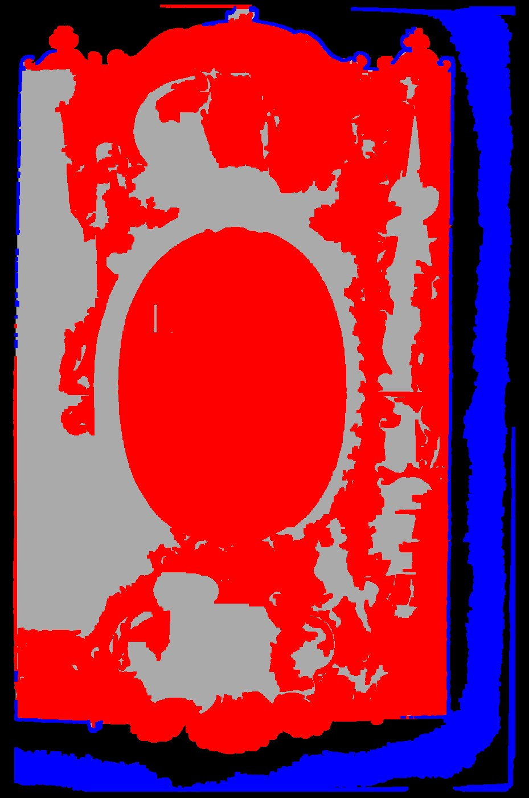
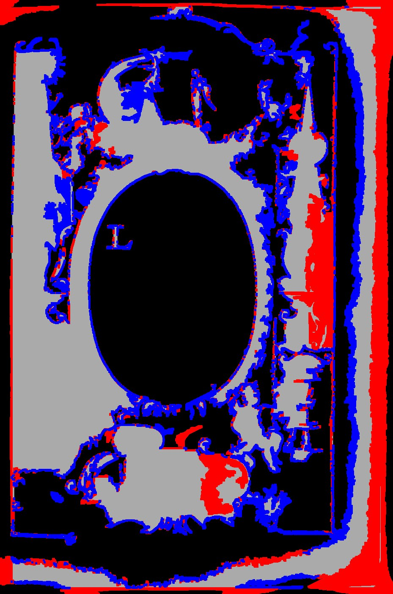
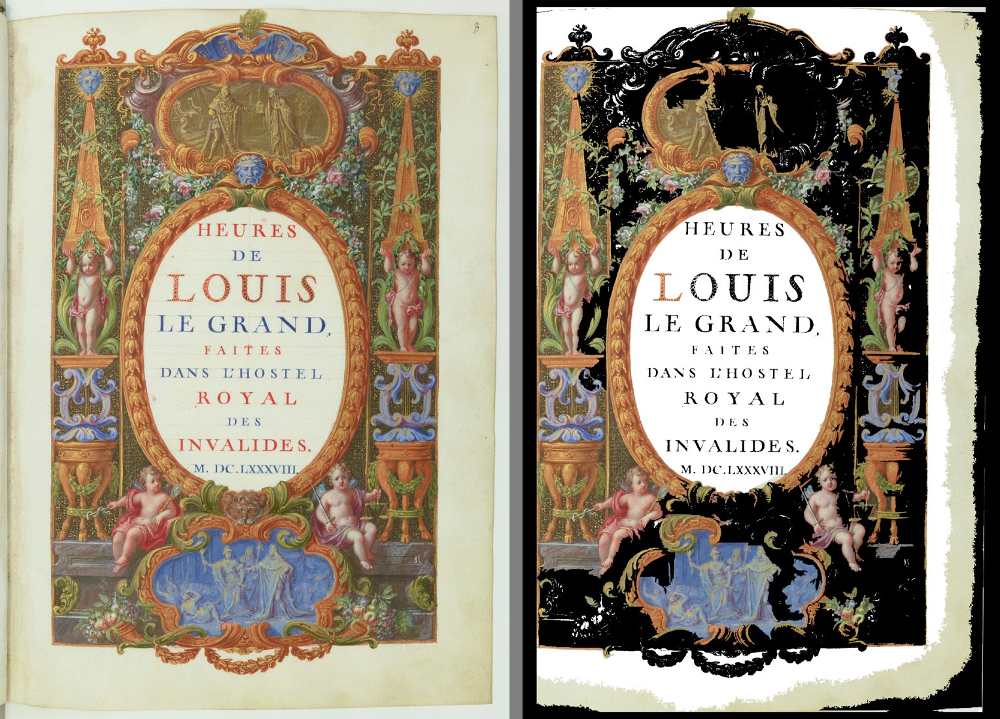
Em cada imagem: original | DLL (vermelho) | detector de hoje (azul). Abri as 7, as 7 de opções ("retangular" e "mais sensível") e ampliações onde tive dúvida. A primeira frase de cada linha diz o que tem na página.
| Página | A DLL (forma livre, o padrão) | O detector de hoje | Quem acerta |
|---|---|---|---|
| Palatino 5: título em texto, retrato oval em xilogravura | Marca só o oval (38%). O texto fica fora. Certo. O papel dentro do oval entra junto: branqueá-lo é do 1.5. | Marca a página inteira (100%), texto junto. Errado. | DLL |
| Escola 35: pintura colorida em cima, texto embaixo | Marca o retângulo da pintura. Certo. | Marca o retângulo da pintura. Certo. | Os dois |
| Horas 11: iluminura de página inteira, centro claro com o título | Marca a iluminura inteira, inclusive a cena azul e os ornamentos de baixo. Certo. Mas marca também o centro claro com o título (a regra pede o centro branco) e uma faixa na dobra à esquerda. Errado nisso. | Marca um retângulo nos 80% de cima (centro incluído) e perde a parte de baixo da iluminura. Errado. | DLL, os dois erram o centro |
| Horas 13: texto dentro de moldura dourada | Marca a moldura dos 4 lados (ampliação abaixo). Certo. Erros pequenos: um triângulo sobre "pag. 54" no canto de baixo e faixas finas na beira do papel. | Marca a moldura dos 4 lados. Certo. | Os dois (o de hoje, um pouco mais limpo) |
| Horas 26: calendário de novembro dentro de moldura dourada | Marca a moldura e o calendário inteiro por dentro (52%), texto junto. Errado: o texto não seria limpo e o papel de dentro ficaria amarelado. | Marca nada (0%). Errado: a moldura some. | Nenhum |
| Horas 27: calendário de dezembro dentro de moldura dourada | Marca a moldura dos 4 lados (4%), texto fora. Certo. Erros pequenos: o fim da linha 17 ("Brabant", que encosta na moldura) e faixas finas na beira do papel. | Marca nada (0%). Errado. | DLL |
| Opus Majus 20: foto da estátua | Marca só pedaços da foto (52% dela): a estátua, o pedestal e o nicho escuro ficam fora. Errado. Onde marca, chega ao alto da foto, sem degrau. | Marca a foto inteira. Certo (nesta chamada). | Hoje |
Placar: a DLL acerta mais que o detector de hoje em 3 páginas (Palatino 5, Horas 11, Horas 27), empata em 2 (Escola 35, Horas 13), perde em 1 (Opus Majus 20). Na Horas 26 os dois erram, de jeitos diferentes.
Contra as regras do Samuel (28/09):
As opções "retangular" e "mais sensível":
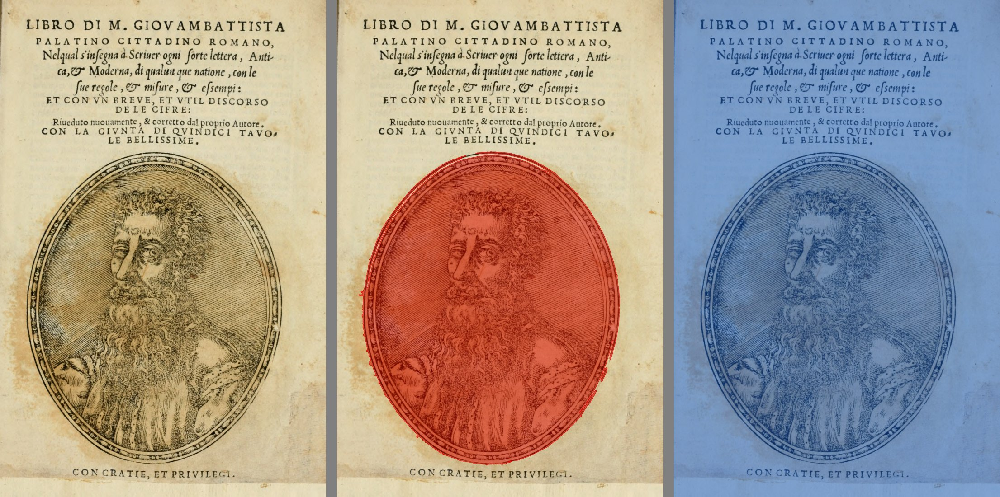
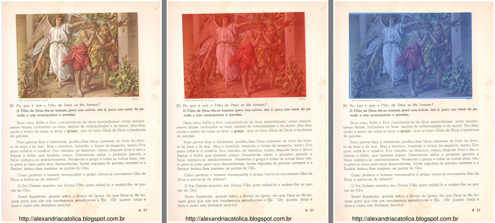
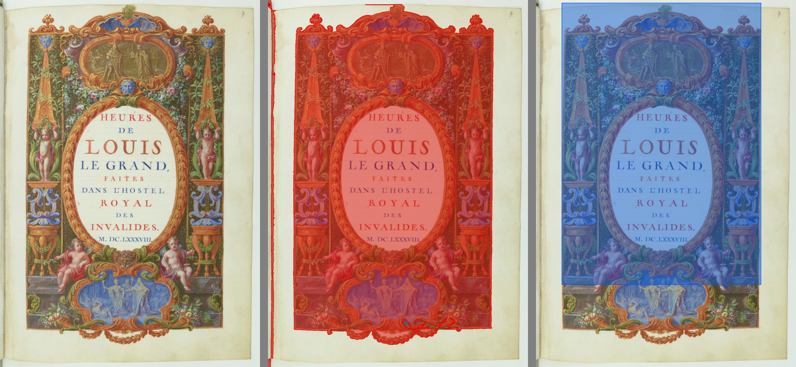
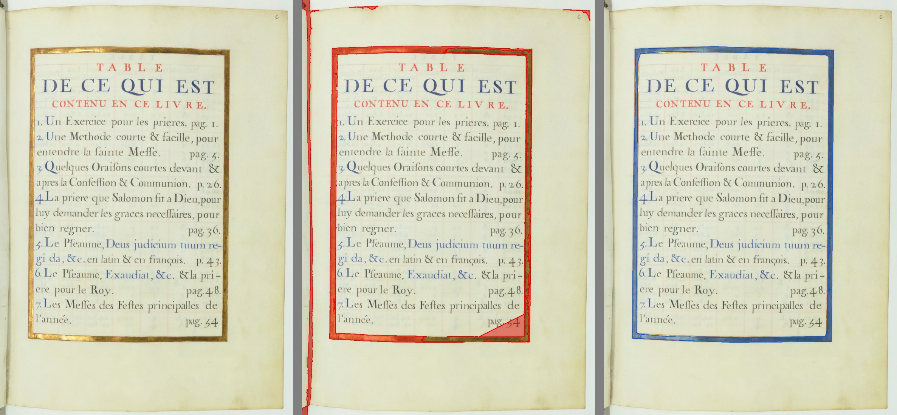
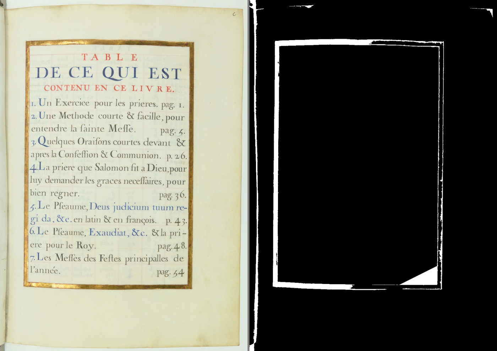
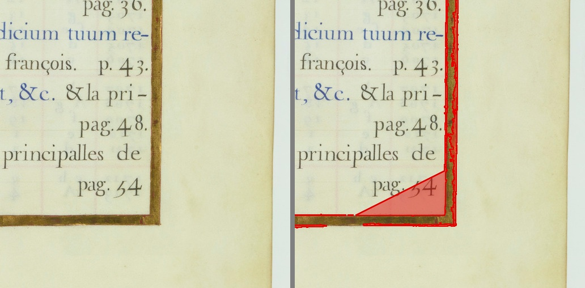
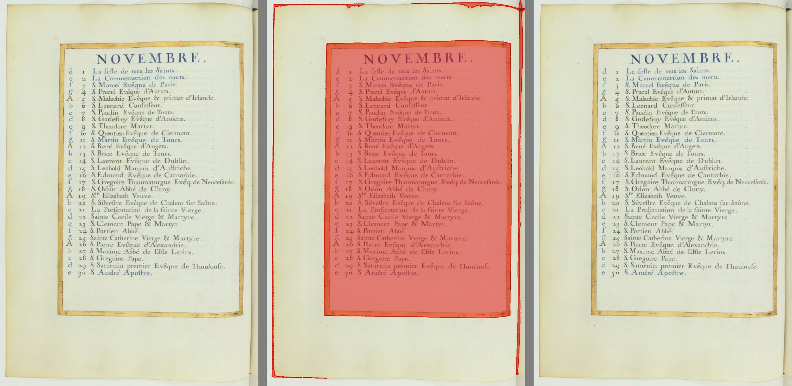
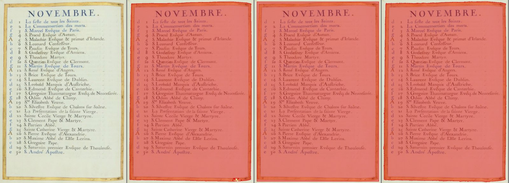
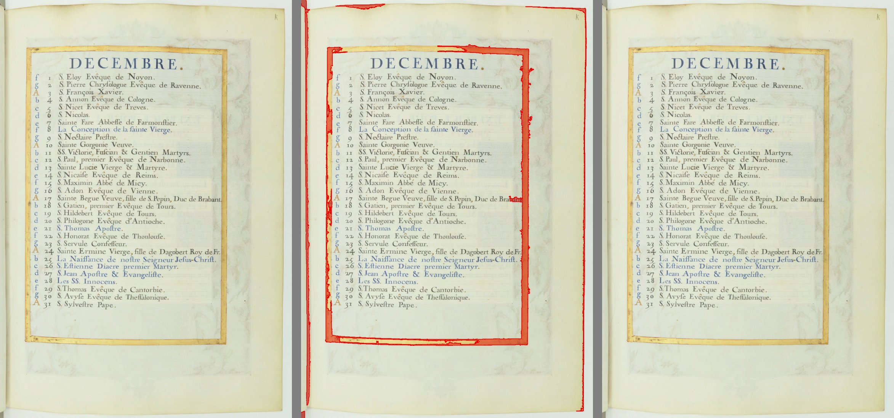
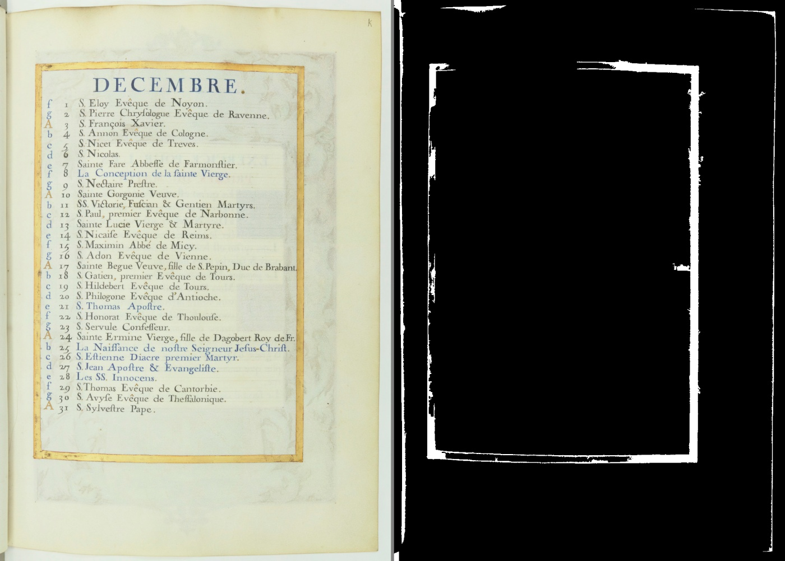
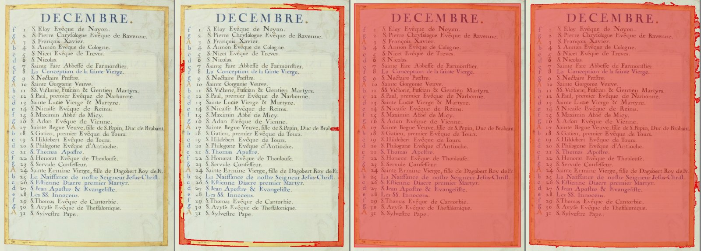
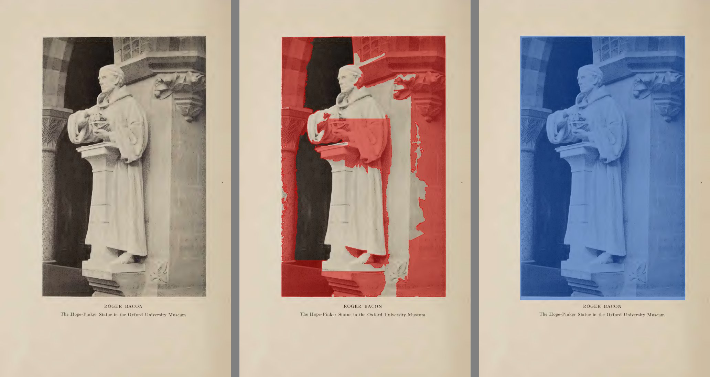
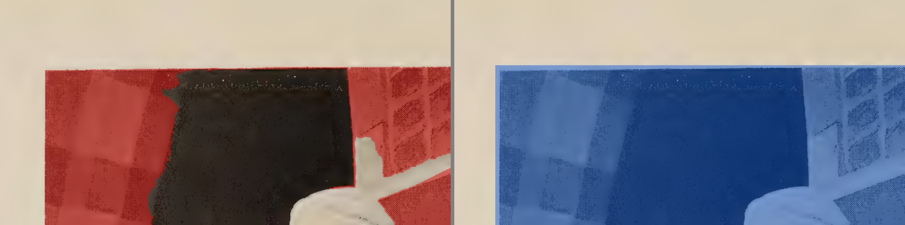
833d03db...):erros.log;figuras_pelo_scantailor) cai na reserva, se ela for passada, ou devolve "nenhuma figura".Por página, no DPI da página. Primeiro o tempo do implementador, depois o meu (medi com o PC mais ocupado).
| Página | DLL | Detector de hoje |
|---|---|---|
| Palatino 5 | 0,9 a 1,2 s | 2,9 a 5,0 s |
| Escola 35 | 1,1 a 1,2 s | 2,5 a 3,5 s |
| Opus Majus 20 | 0,9 a 1,7 s | 1,9 a 2,9 s |
| Horas 11, 13, 26 e 27 | 1,9 a 3,9 s | 0,9 a 2,0 s |
0xC0000374 (memória corrompida). Reproduzi 3 de 3 vezes. Com um espaço de saída 4 vezes maior, continua: a falha não é na ligação.
- Risco: em uso normal não acontece (precisa de DPI acima de uns 200.000). Mas contraria "nenhuma exceção fecha a janela".
- Conserto sugerido, antes de ligar: gravura_scantailor.py recusar DPI fora de uma faixa razoável (por exemplo 30 a 2400) e página que fique com menos de uns 8 pontos a 300 DPI.
- Onde: core/gravura_scantailor.py (a trava) e o código do ScanTailor (a causa). Print: não se aplica, é o processo que morre.paineis/zoom_horas_p013_canto.jpg.LEIA-ME diz "conferido com cmp", mas na pasta do PC um cmp dá diferente nos 72 arquivos, por causa do fim de linha. Sugestão: dizer que a conferência é no git, ou marcar terceiros/ para o git não converter o fim de linha. Mudar a configuração do git é decisão da gerente.Abra as imagens da seção 5 (ou as do relatório do implementador, que são as mesmas: ../obrigatoria_<página>.jpg).
regua_horas_p011.jpg, regua_horas_p011_invertida.jpg e o print de 24/09. A explicação da página invertida convence? (2 min)Arquivos desta conferência: paineis/ (as imagens acima). Os scripts de conferência ficaram na pasta temporária da sessão (régua refeita, cópias da DLL, recompilação), fora do projeto. Nenhum código foi alterado, nenhuma DLL do projeto foi tocada, nenhum commit foi feito.
Editor de Impressão · gerado em 28/09/2026 às 23:41